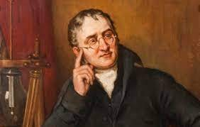
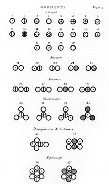

John Dalton Nacio en Cumberland (Reino Unido), 6 de septiembre de 1766 y fallecio en Mánchester, 27 de julio de 1844.
fue un naturalista, químico, matemático y meteorólogo británico. Entre sus trabajos destacan el modelo atómico y su tabla de pesos relativos de los elementos, que contribuyeron a sentar las bases de la química moderna.
También es conocido por haber descrito el daltonismo, defecto visual relativo a la percepción de los colores que padecía y que lleva su nombre.
Biografía
John Dalton nació el 6 de septiembre de 1766 en una familia cuáquera de la población de Eaglesfield, en Cumberland, Inglaterra. Hijo de un tejedor, se sabe que tuvo cinco hermanos, de los cuales sobrevivieron dos: Jonathan, mayor que Dalton, y Mary, cuya fecha de nacimiento se desconoce. Dalton fue enviado a una escuela donde aprendió matemáticas y destacó lo suficiente como para que, a la edad de 12 años, pudiera contribuir a la economía familiar dando clases a otros niños, primero en su casa y después en el templo cuáquero. Los ingresos eran modestos, por lo que se dedicó a trabajos agrícolas hasta que en 1781 se asoció con su hermano Jonathan, que ayudaba a uno de sus primos a llevar una escuela cuáquera en la cercana Kendal.
Alrededor de 1790 Dalton consideró la posibilidad de estudiar derecho o medicina, pero no encontró apoyo de su familia para sus proyectos —a los disidentes religiosos de la época se les impedía asistir o enseñar en universidades inglesas— por lo que permaneció en Kendal hasta que en la primavera de 1793 se trasladó a Mánchester. Gracias a la influencia de John Gough, un filósofo ciego y erudito a cuya instrucción informal Dalton debía en gran parte sus conocimientos científicos, fue nombrado profesor de Matemáticas y Filosofía Natural en la «Nueva Escuela» de Mánchester, una academia de disidentes religiosos. Conservó el puesto hasta 1800, cuando la academia enfrentó la peor situación financiera obligándolo a renunciar a su cargo y comenzar una nueva carrera en Mánchester como profesor particular.
En su juventud Dalton estuvo muy influenciado por un prominente cuáquero de Eaglesfield llamado Elihu Robinson, competente meteorólogo además de fabricante de instrumental, que fue quien despertó su interés por las Matemáticas y la Meteorología.
Durante sus años en Kendal, Dalton colaboró en el almanaque Gentlemen's and Ladies' Diaries remitiendo soluciones a problemas y preguntas y en 1787, comenzó a redactar un diario meteorológico en el que, durante los siguientes 57 años, anotó más de 200 000 observaciones. En esta época también redescubrió la teoría de circulación atmosférica ahora conocida como la célula de Hadley.
La primera publicación de Dalton fue Observaciones y ensayos meteorológicos (1793), que contenía los gérmenes de varios de sus descubrimientos posteriores, aunque a pesar de ello y de la originalidad de su tratamiento recibió escasa atención por parte de otros estudiosos. Una segunda obra de Dalton, Elementos de la gramática inglesa, se publicó en 1802.
Leyes de los gases

En 1800, Dalton se convirtió en secretario de la Sociedad Filosófica y Literaria de Mánchester, y al año siguiente dio una serie de conferencias, bajo el título Ensayos experimentales, sobre la constitución de las mezclas de gases; sobre la presión de vapor de agua y otros vapores a diferentes temperaturas, tanto en el vacío como en aire; sobre la evaporación, y acerca de la expansión térmica de los gases. Estos cuatro artículos fueron publicados en las Memorias de la «Lit & Phil» correspondientes a 1802.
El segundo de estos ensayos comienza con una observación sorprendente: Apenas pueden caber dudas acerca de la reductibilidad de fluidos elásticos de cualquier tipo en líquidos, y no debemos perder la esperanza de conseguirlo aplicando bajas temperaturas y adicionalmente fuertes presiones sobre los gases sin mezclar.
Después de describir estos experimentos para determinar la presión de vapor de agua en varios puntos entre 0 y 100 °C (32 y 212 °F), Dalton llegó a la conclusión a partir de las observaciones de la presión de vapor de seis líquidos diferentes, que la variación de la presión de vapor para todos los líquidos es equivalente, para la misma variación de la temperatura, determinados a partir de vapor a cualquier presión.
En el cuarto ensayo, Dalton anota: No veo ninguna razón por la que no podamos concluir que todos los fluidos compresibles bajo la misma presión se expanden igualmente por el calor, y que para cualquier expansión de mercurio, la correspondiente expansión del aire es proporcionalmente algo menor a mayor temperatura. Parece, por tanto, que es más probable que las leyes generales con respecto de la cantidad absoluta y la naturaleza del calor sean derivadas de los fluidos elásticos más que de otras sustancias.
La teoría atómica

La más importante de todas las investigaciones de Dalton fue la teoría atómica, que está indisolublemente asociada a su nombre. Se ha propuesto que esta teoría se la sugirieron, o bien sus investigaciones sobre el etileno y el metano o los análisis que realizó del óxido nitroso y del dióxido de nitrógeno (dióxido de ázoe), puntos de vista que descansan en la autoridad de Thomas Thomson. Sin embargo, un estudio de los cuadernos de laboratorio de Dalton, descubiertos en la sede de la «Lit & Phil»,
llegó a la conclusión de que, lejos de haber sido guiado a la idea de que la combinación química consiste en la interacción de los átomos de peso definido y característico por su búsqueda de una explicación de la ley de las proporciones múltiples; la idea de los átomos surgió en su mente como un concepto puramente físico, inducido por el estudio de las propiedades físicas de la atmósfera y de otros gases. Los primeros indicios de esta idea se encuentran al final de su nota ya mencionada sobre la absorción de gases, que fue leída el 21 de octubre de 1803, aunque no se publicó hasta 1805.
Aquí dice: ¿Por qué un determinado volumen de agua no admite el mismo volumen de cualquier tipo de gas? He reflexionado profundamente sobre esta cuestión y, aunque no me satisface completamente la respuesta, estoy casi convencido de que tal circunstancia depende del peso y de la cantidad de las partículas últimas constituyentes de los diferentes gases.